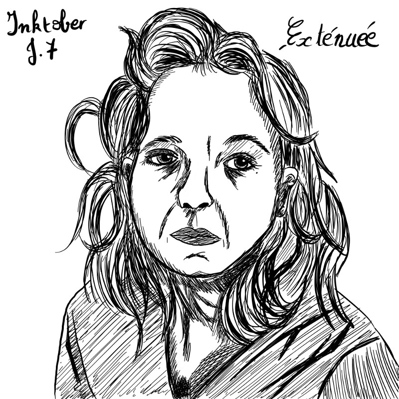

Inktober 2018 - J.7 : Exténué
Publié le 07/10/2018 dans Dessin.
J’ai pris du retard sur le défi, je suis crevée et j’ai trouvé ce thème très approprié pour aujourd’hui. J’ai donc décidé de réalisé un autoportrait, à partir d’une photo. On ne m’y voit pas sous mon meilleur jour, mais au moins, on voit le rapport avec le thème.
Ensuite, je me suis souvenue que j’avais décidé de ne réaliser que des dessins en rapport avec HP. Et puis je me suis dit que le portrait d’une fan respectait bien cette règle.
J’ai procédé de la même manière que pour Touffu, que j’ai d’ailleurs terminé ce matin. Je me suis un peu moins appliquée pour que le tracé soit plus naturel. Je pense pouvoir m’améliorer.
